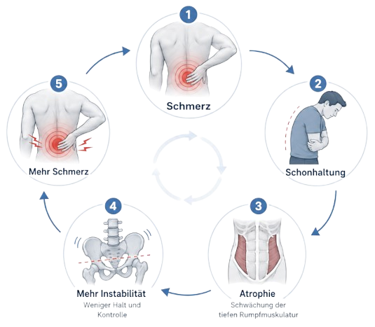
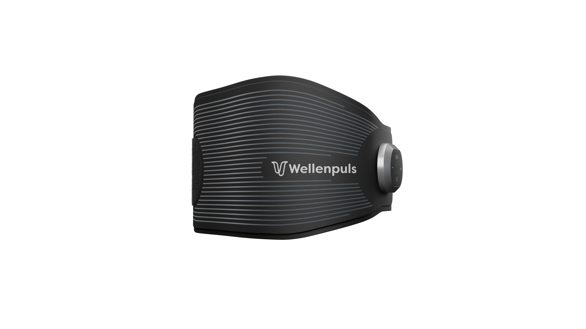

…an dem jede kleine Bewegung wehtut…
…an dem du an nichts anderes denken kannst…
außer deinen Rücken!
Du bist wahrscheinlich an dem Punkt angekommen, an dem ich auch war…
Der Stift ist runtergefallen. Du lässt ihn liegen. Irgendwer hebt ihn schon auf.
Du ziehst nur noch Schuhe ohne Schnürsenkeln an.
Du mähst den Rasen nicht mehr selbst. Das Autowaschen übernimmt auch wer anders.
Im Restaurant suchst du nach den Stühlen aus, nicht nach der Karte.
Erst hast du im Verein aufgehört. Dann mit dem Laufen. Dann mit dem Schwimmen.
Dann war die große Hunderunde weg. Dann die kleine.
Dein Enkelkind hebst du nicht mehr hoch. Du setzt dich hin und wartest, bis es zu dir kommt…
..und obwohl du ein Genießer bist, vermeidest du den Weg in die Küche, weil es einfach nicht anders geht.
..und obwohl es dir riesen Spaß macht, sagst du nicht mehr einfach zu, Du sagst: „Mal schauen, wie es mir geht.“
Ich kann es ganz genau nachvollziehen, wie das ist und was das mit einem macht.
Denn ich war in genau dieser Situation.
Ich habe alles probiert.
Ich war beim Physio. Sechs Termine, zehn Termine, ich weiß es nicht mehr. Er hat mir Übungen mitgegeben, und die haben auch was gebracht.
Dann hatte ich eine Woche mit viel Arbeit, dann ein Wochenende, dann einen schlechten Tag.
Die Übungen habe ich dann wieder eine Woche liegen lassen.
Ich habe Dehn & Trainingsvideos auf Youtube geschaut. Ich wollte es richtig machen, ich wollte nichts falsch machen.
Ich hatte eine Faszienrolle, einen Igelball und einen alten Tennisball.
Außerdem eine Massage Pistole. Ein Theraband, einen Stützgürtel.
Ein Kirschkernkissen und eine Akupressurmatte.
Eine Rotlichtlampe, eine Memory Matratze und Lattenrost mit Zonen.
Der Wasserkocher stand bei mir neben der Couch. Damit ich für meine Wärmflasche nicht durch die halbe Wohnung laufen muss.
Ja… Ich kenne das.
Und wie du alles andere dafür um- oder zurückstellen musst.
Irgendwann ist der Punkt da, wo man schon innerlich aufgegeben hat.
„Es ist jetzt nunmal so..“
Wenn du an diesem Punkt oder kurz davor bist, dann will ich dich ermutigen, jetzt weiterzulesen.
Denn ich war auch dort, aber ich bin da rausgekommen.
Und ich möchte dir zeigen, wie ich das gemacht habe, weil ich genau weiß wie das ist..
Für einen starken Körper bis ins hohe Alter sind die Muskeln das A und O.
Doch insbesondere die Muskeln im Rumpf, also unsere Körpermitte ist entscheidend
Sie stützen die Wirbelsäule, sorgen für eine aufrechte Haltung und verbinden die Kraft von Armen und Beinen.
Wenn speziell die Rückenmuskeln zu schwach sind oder die Bauchmuskeln dominieren, kippt das Becken.
Die Folge sind Fehlhaltungen wie ein Rundrücken oder ein extremes Hohlkreuz, was langfristig zu Schmerzen führt.
Es gilt also, die Muskeln zu stärken.
Jetzt kommt aber der Teil, den mir jahrelang keiner gesagt hat.
Dein Körper macht nämlich nichts Falsches. Er macht genau das, wofür er gebaut ist.
Wenn der Rücken weh tut, dann schont er. Er zieht Muskeln zusammen, er hält dich davon ab, dich zu bücken, er sagt dir: lass das lieber.
Bei einer frischen Verletzung ist das goldrichtig. Zwei, drei Tage schonen, dann heilt es.
Das Problem beginnt, wenn dieser Schutzmechanismus nicht mehr aufhört.
Du bückst dich nicht mehr. Also verlernt dein Körper das Bücken. Und beim nächsten Mal tut es schon bei der halben Bewegung weh.
Du lässt die große Hunderunde weg.
Also verkleinert sich die Strecke, die du beschwerdefrei schaffst.

Jedes Mal, wenn du etwas weglässt, tut auf einmal etwas weh, was vorher völlig harmlos war. Und weil das wehtut, lässt du das auch weg.
Das ist der Kreislauf, den die Übungen vom Physio eigentlich unterbrechen sollten!
Deswegen fühlt es sich an, als würde es immer schlimmer, obwohl du doch alles richtig machst.
Und jetzt kommt der Knackpunkt.
An guten Tagen willst du Gas geben. Du bist motiviert.
Der Rücken meldet sich mal nicht, du fühlst dich fast normal – also machst du alles auf einmal.
Der Keller wird aufgeräumt, der Einkauf gemacht, drei volle Übungen hintereinander, weil es heute ja geht.
Und zwei Tage später liegst du brach.
Dann machst du eine Woche gar nichts. Dann kommt der nächste gute Tag. Und du machst wieder zu viel.
Genau deshalb vernachlässigen ein Großteil der Menschen ihre Physio-Übungen zuhause.
Dieser Kreislauf hat mich zu immer weniger Bewegung, immer weniger Belastbarkeit geführt.
Um ihn umzudrehen, braucht ein Muskel genau zwei Dinge.
Er braucht einen umfangreichen Reiz. Und er braucht ihn regelmäßig.
Ja logisch… Und trotzdem scheitert fast jeder an einem von beiden (ich eingeschlossen), jahrelang.
Schritt 1: Die Regelmäßigkeit des Reizes
Damit ein Muskel stabil und kräftig wird, muss man ihn regelmäßig reizen.
Der Körper baut nämlich alles ab, was er eine Weile nicht braucht. Er ist da völlig unsentimental.
Wenn du deine Rumpfmuskulatur mit Übungen trainierst, dann musst du diese Übungen regelmäßig machen.
Sobald du eine Woche trainierst, und zwei Wochen wieder aufhörst, bringt das ganze so gut wie nix!
Schritt 2: Die Qualität des Reizes:
Denn Regelmäßigkeit allein reicht nicht.
Du kannst eine Übung 200 Mal machen, und wenn dabei der falsche Muskel arbeitet, passiert genau nichts.
Das war tatsächlich ein großes Problem bei mir. Ich habe meine Übungen oft einfach zu schlecht ausgeführt.
Gerade bei der Tiefenmuskulatur im Rücken ist das essentiell.
Bis hierhin ist die Sache eigentlich klar.
Du brauchst zwei Dinge. Einen Reiz, der wirklich beim richtigen Muskel ankommt. Und diesen Reiz regelmäßig, auch an den Tagen, an denen dir alles zu viel ist.
Bleibt nur eine Frage: Woher nimmst du das?
Ich habe damals alles durchprobiert, was es gibt.

Physiotherapie
Physio ist eigentlich die beste Lösung… Die Übungen, die ich bekomme habe, helfen auch da wo sie sollten.
Leider ist es die Umsetzung zuhause, bei der der Physio eben nicht da ist.
Wohin das führt, muss ich dir nicht erklären.
Das Fitnessstudio
Mein Fitnessstudio ist hervorragend. Die Geräte sind Top und die Bewegungen kommen da an wo sie sollten.
Leider muss ich immer dorthin fahren. Jeden zweiten Tag 20 Minuten hin und her ist einfach zuviel in meinem Alltag
Das Zeug bei dir in der Ecke
Die Rolle, der Ball, die Massagepistole, die Akupressurmatte. Diese Dinge lockern die Muskulatur, aber im Muskelaufbau helfen die kaum.
Und genau da war ich festgefahren.
Physio kann die Qualität, aber nicht die Regelmäßigkeit. Studio auch. Das Zeug in der Ecke kann beides nicht.
Ich brauchte etwas, das zu Hause funktioniert, ohne dass ich alles perfekt machen muss.

An der Deutschen Sporthochschule Köln hat ein Sportwissenschaftler etwas untersucht, das mir bis dahin keiner gesagt hatte:
Bei Menschen mit Rückenschmerzen ist ausgerechnet die tief liegende Rumpfmuskulatur messbar geschwächt.
Also die Muskulatur, die deine Wirbelsäule in jeder Sekunde hält, ohne dass du davon etwas mitbekommst.
Er wollte eine Studie machen und brauchte ein Gerät, das genau diese Muskeln anspricht.
Es gab keines. Also hat er es gebaut.
Die Ergebnisse waren so gut, dass daraus eine Firma wurde.
Das Gerät heißt Wellenpuls LWS. Ein Gurt, den du dir um den unteren Rücken legst.

Der Wellenpuls arbeitet mit Elektrostimulation. Der Impuls geht direkt an den Muskel, und der zieht sich zusammen.
Das heißt: Der Fehler, den ich zu Hause jahrelang gemacht habe, ist damit nicht mehr möglich. Der Reiz kommt da an, wo der Gurt sitzt.
Du musst dafür keine Technik können.
Du musst nicht wissen, ob du es gerade richtig machst. Es schaut niemand zu und muss auch niemand.
Wie stark der Reiz ist, entscheidest du selbst. An guten Tagen mehr, an schlechten weniger.
Warum die Regelmäßigkeit klappt
Zwanzig Minuten. Gurt umlegen, hinsetzen, fertig.
Du machst es auf der Couch, während die Serie läuft. Oder am Schreibtisch. Oder abends, wenn du eigentlich schon nichts mehr vorhattest.
Und dann ist da noch die Wärme, die eingebaut ist. Die die Muskeln noch wunderbar entspannt
Es fühlt sich einfach gut an. Du musst dich nicht überwinden. Du freust dich sogar drauf!

Hört sich verlockend an.. aber da war wieder mein Misstrauen.
Wird es wieder ein Gerät was ich nicht nutze? Und für knapp 500€ ist das Teil nicht billig.
Dann habe ich darüber nachgedacht, was ich eigentlich in den letzten Jahren alles ausgegeben habe.
Es sind deutlich mehr als 5000€ und eine Besserung gab es nicht!
Aber jetzt wieder Geld ausgeben?
Naja.. die Bewertungen haben mich überzeugt und ich habe es bestellt.
Nach 3 Tagen war das Gerät da, mit Videoanleitung und los gehts.
Das Gerät legt man um den Rücken. Per Klettverschluss passt man es seinem Umfang an und schaltet das Programm an.
Ich habe mich auf die Couch gelegt und während das Gerät arbeitet was gelesen.
Die Stimulation fühlt sich wie ein angenehmes Vibrieren und man merkt wie die Muskeln arbeiten.
Nach 20 Minuten war ich fertig.
Der Tag danach
Am Abend hatte ich Muskelkater vom feinsten. Wie nach einer guten Physio Stunde.
Ab diesem Punkt wusste ich, ich werde das Gerät weiter nutzen!
Und das tue ich jetzt seit einigen Monaten. Jeden zweiten bis dritten Tag Abends auf der Couch.
Mittlerweile auch beim Kochen, oder zwischendurch
Der Wellenpuls verfügt über einen Intensitätsregler, sodass ein progressives Training möglich ist.
Ich habe den Regler jede woche etwas höher gestellt.
Siehe da! Mein Rücken fühlte sich nach 3 Wochen stabiler an als jemals zuvor.
Ich kann wieder Laufen gehen und Fahrrad fahren. Mit dem Hund Gassi gehen und meine Enkelin auf die Schaukel heben.
Die Lebensqualität ist unbezahlbar..
Aber das wichtigste ist: Ich plane nicht mehr mein gesamtes Leben um meinen Rücken herum.
Wenn du jetzt nachdenkst…
Ich sage nicht, du sollst das ausprobieren.
Ich kenne deine Vorgeschichte nicht. Ich weiß nicht, was bei dir los ist und woran es liegt. Und ich bin der Letzte, der dir erzählt, dass ein Gerät alles löst.
Ich sage dir nur, was bei mir passiert ist.
Und ich sage dir ehrlich, für wen das nichts ist.
Wenn du erwartest, dass du den Gurt umlegst und der Schmerz weg ist, lass es. Das passiert nicht.
Es ist ein Trainingsgerät, und Training braucht nunmal Wochen.
Wenn du glaubst, dass es reicht, das Ding zu besitzen, lass es auch.
Dann liegt es in vier Wochen bei dir in derselben Ecke wie meine Faszienrolle.
Und wenn du es nicht regelmäßig benutzen willst, kannst du dir das Geld sparen. Ohne Regelmäßigkeit passiert nichts. Das ist die halbe Botschaft dieses Briefes.
Wenn du aber an dem Punkt bist, an dem ich war – du hast es versucht, mehrfach, du weißt eigentlich, was du tun müsstest, du kriegst es nur nicht durchgehalten – dann ist das die eine Sache, die ich an deiner Stelle noch probieren würde.
Zum Preis
Der Wellenpuls kostet 489 Euro.
Das ist kein kleiner Betrag, und ich will das nicht schönreden.
Ich habe gesehen, dass es den Wellenpuls mittlerweile auch zum Mieten gibt. Das kostet wesentlich weniger. ca. 50€ Pro Monat
Ich habe damals nur eines gemacht: zusammengerechnet, was die Jahre davor gekostet haben. Zuzahlungen, Geräte, Studiobeiträge, Matratze, Lattenrost, alles zusammen. Ich bin bei über 5.000 Euro rausgekommen. Verbessert hatte sich nichts.
Ich habe den Wellenpuls jetzt über 4 Monate regelmäßig genutzt. Bei 64 Einheiten sind das gerade mal 7€ pro Einheit..
Der Hersteller bietet eine 30 Tage Geld-zurück Garantie. Falls du es nicht nutzen solltest, schickst du ihn zurück und bekommst dein Geld.
Was ich dir noch mitgeben will
Der Rücken war nie das eigentliche Problem. Das Problem war, dass mir keiner eine Möglichkeit gegeben hat, die ich auch an einem schlechten Dienstag noch durchziehe.
Jetzt liegt es bei dir. Ich habe dir erzählt, was ich weiß und wie es bei mir gelaufen ist. Was du damit machst, entscheidest du.
Aber entscheide dich für irgendetwas. Der Kreislauf von vorhin läuft nämlich weiter, egal was du tust. Und er läuft in nur eine Richtung, solange du nichts dagegen hältst.
Alles Gute für deinen Rücken,
Georg